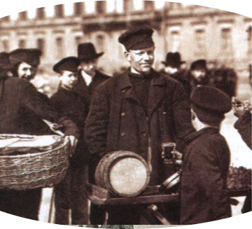

1812
Легенда
В рождественский вечер 1812 года Петр Елисеев, крепостной садовник графа Шереметьева, внес угощение для гостей — свежую землянику. Изумленный граф спросил, как отблагодарить талантливого садовника за такое чудо. Петр не растерялся и попросил вольную. Граф сдержал слово, дал вольную Елисееву с женой и сто рублей подъемных — по тем временам огромные деньги. Оказалось, что бывший крепостной обладал не только талантом садовника, но и незаурядной коммерческой жилкой. Петр Елисеев прославился на весь Петербург, благодаря умению удивить самых требовательных покупателей. Так началась великая история Магазина Купцов Елисеевых. Спустя несколько десятилетий потомки Петра откроют в Петербурге Торговый дом - центр управления всей деятельностью братства Елисеевых, который вы можете посетить и сегодня. С момента постройки и по сей день магазин сочетает в себе многогранную концепцию - это не только гастоном, но также рестораны, театр и парадная гостинная для торжественных приемов.